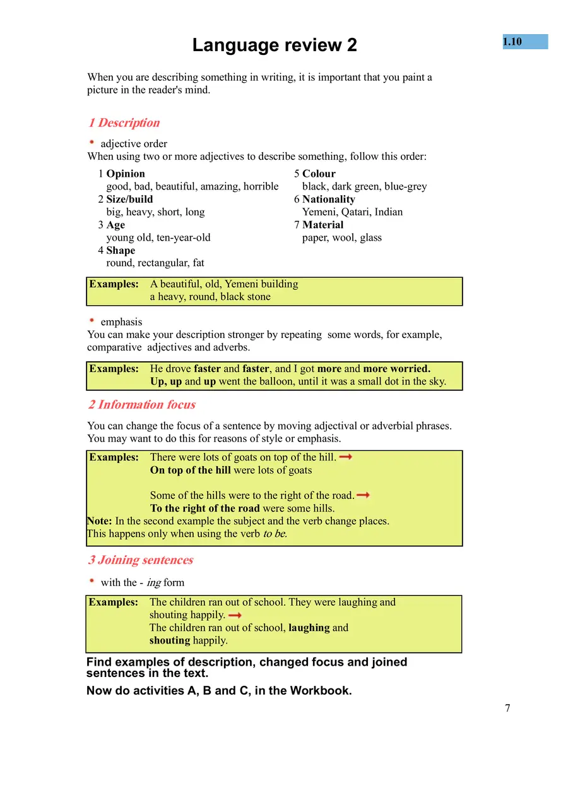

1.10 Language review 2 When you are describing something in writing, it is important that you paint a picture in the reader's mind.
1 Description • adjective order When using two or more adjectives to describe something, follow this order: 1 Opinion: good, bad, beautiful, amazing, horrible 2 Size/build: big, heavy, short, long 3 Age: young old, ten-year-old 4 Shape: round, rectangular, fat 5 Colour: black, dark green, blue-grey 6 Nationality: Yemeni, Qatari, Indian 7 Material: paper, wool, glass Examples: A beautiful, old, Yemeni building | a heavy, round, black stone • emphasis You can make your description stronger by repeating some words, for example, comparative adjectives and adverbs. Examples: He drove faster and faster, and I got more and more worried. | Up, up and up went the balloon, until it was a small dot in the sky.
young old, ten-year-old دون فاصلة بين young وold، كما وردت كلمة Yemen بدلاً من Yemeni في WB p. 10 (1.10 A #3)؛ وحُفظتا حرفياً مع التنبيه.2 Information focus You can change the focus of a sentence by moving adjectival or adverbial phrases. You may want to do this for reasons of style or emphasis. Examples: There were lots of goats on top of the hill. → On top of the hill were lots of goats Some of the hills were to the right of the road. → To the right of the road were some hills. Note: In the second example the subject and the verb change places. This happens only when using the verb to be. 3 Joining sentences • with the - ing form Examples: The children ran out of school. They were laughing and shouting happily. → The children ran out of school, laughing and shouting happily. Find examples of description, changed focus and joined sentences in the text. Now do activities A, B and C, in the Workbook.
On top of the hill were lots of goats من نقطة ختامية في طبعة PDF ص 9، وجاءت فاصلة زائدة بعد C, في السطر الأخير، وحُفظتا حرفياً.[
{
"num": 1,
"question": "hair black/long/beautiful",
"model_answer": "beautiful, long, black hair",
"explain_ar": "رأي (beautiful) ← طول/حجم (long) ← لون (black)."
},
{
"num": 2,
"question": "table long/metal/green",
"model_answer": "a long, green, metal table",
"explain_ar": "حجم (long) ← لون (green) ← مادة (metal)."
},
{
"num": 3,
"question": "house Yemen/amazing/300-year-old",
"model_answer": "an amazing, 300-year-old, Yemeni house",
"explain_ar": "رأي (amazing) ← عمر (300-year-old) ← جنسية (Yemeni — لاحظ أن كتاب التمارين طبع الاسم Yemen خطأً بدلاً من الصفة Yemeni)."
},
{
"num": 4,
"question": "man fat/English/heavy",
"model_answer": "a heavy, fat, English man",
"explain_ar": "حجم/بنية (heavy من قائمة 2 في الكتاب) ← شكل (fat من قائمة 4 في الكتاب) ← جنسية (English)."
},
{
"num": 5,
"question": "boat dark green/wooden/lovely",
"model_answer": "a lovely, dark green, wooden boat",
"explain_ar": "رأي (lovely) ← لون (dark green) ← مادة (wooden)."
},
{
"num": 6,
"question": "trousers old/horrible/wool",
"model_answer": "horrible, old, wool trousers",
"explain_ar": "رأي (horrible) ← عمر (old) ← مادة (wool)، وtrousers جمع بدون أداة تنكير."
},
{
"num": 7,
"question": "child happy/Indian/eight-year-old",
"model_answer": "a happy, eight-year-old, Indian child",
"explain_ar": "رأي (happy) ← عمر (eight-year-old) ← جنسية (Indian)."
},
{
"num": 8,
"question": "window glass/big/rectangular",
"model_answer": "a big, rectangular, glass window",
"explain_ar": "حجم (big) ← شكل (rectangular) ← مادة (glass)."
}
][
{
"num": 1,
"question": "He felt very happy looking at the wonderful view.",
"model_answer": "Looking at the wonderful view, he felt very happy.",
"explain_ar": "تقديم العبارة الحالية (Looking at the wonderful view) لبداية الجملة متبوعة بفاصلة."
},
{
"num": 2,
"question": "There were many boats on the water.",
"model_answer": "On the water were many boats.",
"explain_ar": "تقديم شبه الجملة المكانية مع حذف There وقلب الفاعل والفعل (were many boats) وفق مثال 2 في PB ص 7."
},
{
"num": 3,
"question": "After eating his dinner, he went to look his cows.",
"model_answer": "He went to look [at] his cows after eating his dinner.",
"explain_ar": "نقل عبارة الزمن (after eating his dinner) إلى نهاية الجملة؛ لاحظ سقوط حرف الجر at مطبعياً في الكتاب الأصلي."
},
{
"num": 4,
"question": "In the distance were some high mountains.",
"model_answer": "There were some high mountains in the distance.",
"explain_ar": "الجملة في الأصل مقدّمة البؤرة، فإعادة صياغتها تُرجعها للترتيب العادي باستخدام There were ... in the distance."
},
{
"num": 5,
"question": "The cold, clear stream ran down the valley.",
"model_answer": "Down the valley ran the cold, clear stream. (or: Down the valley, the cold, clear stream ran.)",
"explain_ar": "تقديم شبه الجملة المكانية Down the valley إلى الصدارة؛ يجوز أسلوبياً قلب الفعل ran أو إبقاؤه بعد الفاعل لأن الفعل ليس verb to be."
}
][
{
"num": 1,
"question": "The birds followed the plough. They were looking for something to eat.",
"model_answer": "The birds followed the plough, looking for something to eat.",
"explain_ar": "حذف الضمير والفعل المساعد (They were) والربط بفاصلة قبل looking."
},
{
"num": 2,
"question": "The men felt happy. They were lying in the sun after work.",
"model_answer": "The men felt happy, lying in the sun after work.",
"explain_ar": "حذف They were وربط حال الرجال بفاصلة + lying in the sun after work."
},
{
"num": 3,
"question": "Rashid swam in the sea near his house. He was enjoying the cool water.",
"model_answer": "Rashid swam in the sea near his house, enjoying the cool water.",
"explain_ar": "حذف He was وربط جملة السبب/الحال بفاصلة + enjoying the cool water."
}
]{
"pb_text_vs_image": "طُوبق النص المستخرج من PB ص 7 مع صورة pb-09.png بالكامل: حُفظت غيابات علامات الترقيم الطباعية الحرفية ('young old, ten-year-old'، وغياب النقطة بعد 'lots of goats'، والفاصلة بعد 'C,') وسُجّلت في ملاحظات التوثيق.",
"wb_ocr_vs_image": "قُورنت صفحتا WB ص 10–11 مع tesseract.js eng: حُفظت الأخطاء الطباعية الرسمية ('Yemen/amazing/300-year-old' و'look his cows') كما ظهرت في الصورة مع التوضيح التعليمي وتوثيقها في REVIEW_NEEDED.md."
}